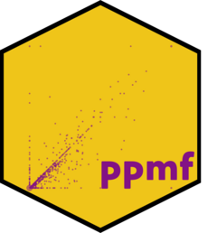

ppmf 
The goal of ppmf is to convert Census Privacy Protected Microdata Files into somewhat wider data aggregated to a geographic level.
Installation
You can install the development version from GitHub with:
# install.packages("devtools")
devtools::install_github("christopherkenny/ppmf")Basics
Load the package:
Download and read data with:
path <- download_ppmf(dsn = 'filename.csv', dir = 'some/directory')
al <- read_ppmf(state = 'AL', path = path)For future use, I recommend storing the path to the data for future sessions using:
add_pmmf12_path(path)Then the path can be recovered with:
path12 <- Sys.getenv('ppmf12')Once you’ve read in what you want, you can aggregate it to the right level:
And aggregated data can use the GEOID to merge with shapefiles: